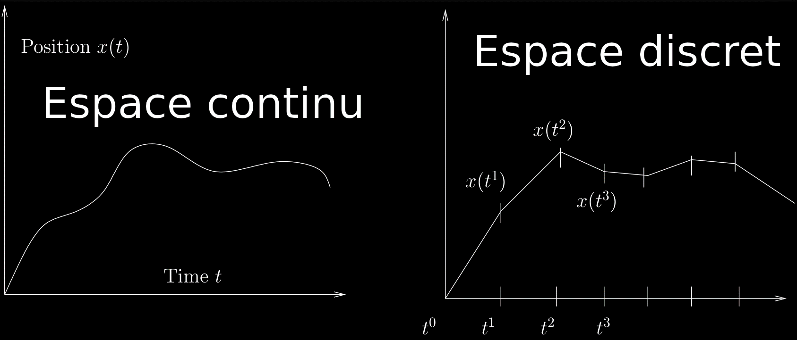
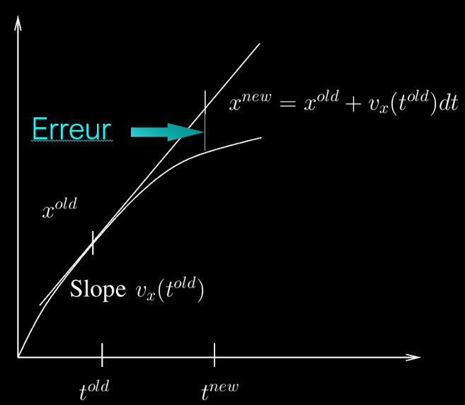

Cours 2#

Objectifs de ce cours#
Rappel sur la dérivée : illustration par un exemple dynamique
Équations aux dérivées partielles
Discrétisation (du monde “réel” continu au monde “numérique” discret)
Discrétisation temporelle
Structure d’un modèle numérique
Figures interactives
Définition de la dérivée#
La dérivée de \(x(t)\) par rapport à \(t\) est la pente (slope) de la tangente au graphe de la fonction \(x(t)\) au point \(t\). On peut écrire aussi la dérivée:

Signification physique de la dérivée#
Une voiture parcourt le trajet Genève-Lausanne-Bern-Zurich-St Gall, la distance parcourue est \(x(t)\), sa vitesse est la dérivée de la position par rapport au temps.
Dérivées partielles#
Les fonctions qui décrivent des quantités physiques sont en général des fonctions du temps (\(t\)) et d’espace (\(x,y,z\))
Nous pouvons donc rencontrer des dérivées par rapport à \(t\), \(x\) , \(y\), ou \(z\).
Pour éviter toute confusion, on parle de dérivées partielles, et on note la dérivée partielle de \(f\) par rapport au temps t ainsi:
Attention, ceci est une notation, pas la division d’un nombre par un autre!
Une équation différentielle est#
… une équation ne fait intervenir la dérivée par rapport à une seule variable par exemple
Une équation aux dérivées partielles est#
… une équation fait intervenir la dérivée par rapport à plusieurs variables par exemple
Espaces continus et discrets#
En général, les équations différentielles ou aux dérivées partielles issues de la physique ne peuvent pas être résolues dans le domaine continu. → On doit donc les résoudre numériquement dans un domaine discrétisé !

Illustration avec la modélisation des glaciers#
Discrétisation, initialisation et boucle#
Pour résoudre numériquement une équation d’évolution (c’est le cas pour tous les exemples de ce cours), il nous faut construire une discrétisation du temps en créant des points de temps, c’est-à-dire
espacés de \(dt\) (le pas de temps), avec lesquels nous mettons à jour le temps.
Les modèles sont toujours présentés de la même manière, avec une partie d’initialisation et une boucle temporelle :
On initialise les variables au temps initial.
On met à jour les variables dans la boucle temporelle.
Structure d’un modèle#
Le code suivant définit une discrétisation de l’intervalle de temps \([0,1000]\) en nt=10000 pas de temps de longueur dt=0.1.
# Parametre physiques
total_time = 1000
# Parametre numeriques
dt = 0.1
nt = int(total_time/dt) # Nombre de pas de temps, qui doit etre un entier.
# Initialisation
time = 0
# Boucle en temps
for i in range(nt):
time += dt # Mise à jour du temps
Discrétisation d’une dérivée#
Dérivée continue $\(\frac{df(t)}{dt} = \lim_{\Delta t \to 0} \frac{f(t + \Delta t) - f(t)}{\Delta t}\)$
Dérivée discrétisée dans l’espace temporel discret suivant
Ce qui donne la règle de la mis-à-jour suivante:
où \(dt\) est le pas de temps.
En initialisation ou dans la boucle ?#
Il faudra souvent se poser la question de savoir où doivent aller les instructions.
Pour déterminer si les instructions que vous souhaitez inclure doivent être
dans l’initialisation
OU dans la boucle,
Pour le savoir, demandez-vous si cette instruction doit-elle être mise à jour dans le temps ? Si oui, elle doit être dans la boucle ; sinon, elle doit être à l’initialisation.
Boucle temporelle via for ou while#
time = 0
ttot = 500
Il est possible de stopper la boucle quand une condition est remplie:
en utilisant un
break:
for i in range(nt):
time += dt
if time > ttot:
break
en utilisant la commande
while:
i = 0
while time < ttot:
i += 1
time += dt
Structure d’un modèle dynamique#
Notons que tous les modèles du cours présentent la même structure :
# I> parametre physiques
x_ini = 1
# II> parametre numeriques
nt = 100
dt = 0.1
# III> initialisation
x = np.zeros(nt)
x = x_ini
# IV> boucle temporel
for i in range(nt):
x += ? # regle de mise à jour
plt.plot(...) # Visualisation
Application à la vitesse d’un objet en 1D#
La vitesse d’un objet est définie comme un changement de position \(x\) par temps \(t\):
Connaissant au temps t la position d’un objet \(x(t)\) ainsi que sa vitesse \(v(t)\) on peut approcher sa position au temps suivant \(t^{new} = t^{old} + dt\) avec la régle de mise à jour: $\(x^{\text{new}} =x^{\text{old}} + V \times dt, \)\( où \)dt$ est le pas de temps.
Si j’avance à 4 km/h, je serai \((4 km / h) \times ( 0.5 h ) = 2 km\) plus loin après 1/2 heure.
Plus rigoureusement#
Dans la dérivée
\(x(t+\Delta t)-x(t)\) et \(\Delta t\) sont infiniment petits, une quantité que l’on ne peut pas représenter sur un ordinateur. Si au contraire, on fixe \(\Delta t\) à une petite valeur (\(dt\)), les incréments de temps et de distance sont des valeurs discrètes et ainsi manipulable par un ordinateur. Pour cela, nous faisons l’approximation suivante:
laquelle peut être réorganisée pour calculer la position \(x\) au temps nouveau \(t+\Delta t\) en fonction de celle au temps ancien \(t\), cad \(x^{\text{new}} =x^{\text{old}} + V \times dt.\)
Erreurs induites par l’approximation#
La solution discrète est une approximation de la solution continue. L’erreur est controlée par le pas de temps \(dt\): plus \(dt\) est petit, moins l’erreur est grande!

Tout au long du cours, il faudra veiller à toujours prendre des pas de temps \(dt\) (et d’espace !) suffisamment précis pour permettre à la solution d’être précise.
Equations “continues” versus “discrétisées”#
Attention à ne pas confondre:
les équations continues (celles-ci ne s’implémentent pas directement): $\(\frac{dx(t)}{dt} = v(t)\)$
les équations discrétisées (celles-ci permettent l’implémentation dans le code python qui suit):
x += V * dt
Affichage interactif d’une figure (1/3)#
Lorsque nous implémentons un modèle numérique, il est commode de visualiser les résultats de manière dynamique, pour voir la solution évoluer avec le temps.
Pour ce faire, il nous faut appeler la bibliothèque IPython, qui permet l’interactivité, en plus de matplotlib, qui gère l’affichage de figures :
import matplotlib.pyplot as plt
from IPython.display import display, clear_output
Affichage interactif d’une figure (2/3)#
Pour afficher un figure interactive, nous commeçons par la commande fig, ax = plt.subplots() avant de commencer la boucle temporelle. Cela initialise une figure (fig) et un ensemble d’axes (ax) où les données seront tracées. fig représente la fenêtre graphique globale, tandis que ax correspond à la zone où les graphiques et les éléments visuels seront affichés.
Dans la boucle, nous utilisons clear_output(wait=True) pour nettoyer la sortie précédente, afin d’éviter la superposition des graphiques. La commande ax.cla() permet de nettoyer les axes, c’est-à-dire de supprimer toutes les données et éléments visuels précédents du tracé. Enfin, display(fig) affiche la figure mise à jour avec les nouvelles données et configurations à itération.
Affichage interactif d’une figure (3/3)#
Notons qu’en définissant fig, ax = plt.subplots(), il faut ensuite appeler les commandes d’affichage via ax (et non plt). Bon nombre de fonctions plt ont un équivalent avec ax en ajoutant set_ devant, par exemple :
ax.plot(z, T, linewidth=2.5)
ax.set_title('Figure')
ax.set_ylabel('Concentration')
ax.set_xlabel('Elevation, m')
ax.set_ylim([0, 500])
Il est également possible de définir une figure avec plusieurs sous-figures en utilisant la commande fig, (ax1, ax2) = plt.subplots(2, 1). Dans ce cas, il faudra appliquer ax1.cla() et ax2.cla() (pour chaque axe) afin de les nettoyer, puis remplir les axes respectivement avec ax1.plot(...) et ax2.plot(...).
Fréquence d’affichage d’une figure interactive#
La fréquence d’affichage d’une figure interactive doit être suffisamment grande pour bien voir l’évolution temporelle du résultat, mais pas trop pour ne pas ralentir le code inutilement. Pour cela, nous pouvons utiliser le code suivant:
nout = 10 # frequence d'affichage
nbit = 1000 # nombre d'iteration maximum
for it range(nbit):
if it % nout == 0:
# commande d'affichage (chaque 10 itérations)
Ici la commande it % nout opére le reste de la division de it par nout, dans le cas ci-dessus, le reste de la division de it par 10 sera bien nulle (et donc le résultat sera bien affiché) chaque 10 lorsque it=10, 20, 30,....
Example d’utilisation d’une figure interactive#
import matplotlib.pyplot as plt
from IPython.display import clear_output, display # Définit 2 fonctions utiles
fig, ax= plt.subplots() # Définit une figure princ.
for it in range(1, nt):
...
clear_output(wait=True) # permet de rafraichir le display
ax.cla() # permet la mise à jour de l'axe
ax.scatter(distx, disty, c='k')
ax.set_xlim(0, 200)
ax.set_ylim(0, 1000)
ax.set_xlabel('label x')
ax.set_ylabel('label y')
display(fig) # fait une pause (cela peut être trop rapide)
Notons ici que la commmande plt.pause(0.1) permet de faire une pause si le calcul est trop rapide, afin de mieux voir l’évolution de la variable.